6 Multivariate analysis
So far, every model we’ve used has had a single response variable. Multivariate analyses are techniques that allow the analysis of multiple response variables, such as counts of each species within a community. Statistical routines for multivariate analysis are relatively new and have co-evolved with computational capacity. Multivariate data are typically stored as a matrix of samples (rows) v ‘features’ (columns). Features may include things like faunal counts, chemical concentrations, or environmental conditions.
Multivariate analysis typically includes three stages:
- Data transformation or standardisation
- Calculation of a dissimilarity matrix
- Ordination (display) of the dissimilarity matrix
Each of these steps has numerous options, with advantages and disadvantages to each. Multivariate analysis are less inferential than most univariate approaches and implementation can feel subjective. Statisticians are still arguing about the best way to approach multivariate analyses.
Multivariate data occur in a number of common situations, including species inventories, multiple data streams from the same station (e.g., a glider with CTD), and in bioinformatics (e.g., metabarcoding). Many are critical resources in understanding relative change through time.
More detail on the the material we cover here is accessible in Clarke et al. (2014) on Brightspace, entitled Change in marine communities: An approach to statistical analysis and interpretation.
6.1 Non-Metric Multidimensional Scaling (NMDS)
For the NMDS workflow, we’ll work through the above steps (data |> transform() |> dissimilarity() |> ordination()) first with two simulated datasets and then with a more complex (real) dataset included in the package vegan.
Recall that the ^ operator raises each element in a vector to a power. For example, for the vector obs_values <- c(1, 10, 35), we can calculate a fourth-root transformation of the whole vector with obs_values^(1/4). Remember from previous courses that this is identical to sqrt(sqrt(obs_values)).
6.1.1 1: Data transformation
Read in the data from the “WormComm” sheet in “H2SMS_practicalData.xlsx”. Some of the functions use row names, so we’ll make the Site column into row names instead.
worm_df <- read_xlsx("data/H2SMS_practicalData.xlsx", "WormComm") |>
column_to_rownames("Site")
worm_df Capitella Malacoeros Mysella Nucella
CE1 2753 997 1 4
CE2 3196 5016 1 1
CE3 3270 1864 1 0
Ref1 24 90 80 44
Ref2 80 73 53 17# alt-log transformation: ifelse(x==0, 0, log(x))
worm_df_log <- decostand(worm_df, method = "log", logbase = 10)
worm_df_4rt <- worm_df^0.25Take a look at worm_df, worm_df_log, and worm_df_4rt to be sure they make sense.
6.1.2 2: Dissimilarity matrix
A dissimilarity matrix summarises the dissimilarity between each pair of samples. There are many methods of summarising the dissimilarity (or distance), particularly when that dissimilarity occurs across multiple dimensions (here, genera).
The vegdist() function can generate distance matrices using many different methods. See ?vegdist for more information. We’ll use Bray-Curtis for the raw and 4th-root transformed data, and alternative Gower for the alt-log transformed data. See the help page and Brightspace material for more information on these. Feel free to investigate other combinations of data transformation and dissimilarity matrices.
vegdist(worm_df, method = "bray") CE1 CE2 CE3 Ref1
CE2 0.3730470
CE3 0.1561305 0.2417410
Ref1 0.9403957 0.9725509 0.9571934
Ref2 0.9205631 0.9632571 0.9425159 0.2754881vegdist(worm_df_4rt, method = "bray") CE1 CE2 CE3 Ref1
CE2 0.10496393
CE3 0.08826713 0.08734130
Ref1 0.41020267 0.49340913 0.51574708
Ref2 0.35739784 0.44614749 0.46353620 0.08240546vegdist(worm_df_log, method = "altGower") CE1 CE2 CE3 Ref1
CE2 0.3421307
CE3 0.4871381 0.3599632
Ref1 1.5121326 1.8542633 1.9992706
Ref2 1.2561883 1.5983191 1.7433264 0.3014041Q. 6.1
Based on the dissimilarity matrices, which sites are more similar (smaller numbers) and which are more dissimilar (bigger numbers)? Does this align with an ‘eyeballing’ of the data? How has the data transformation changed the resultant dissimilarity matrix?
CE1, CE2, and CE3 are similar, and Ref1 and Ref2 are similar. Yes, this aligns with looking at the data. The transformations change the influence of the highly abundant Capitella and Malacoeros at CE1-3.
6.1.3 3: Ordination
Next we want to plot the dissimilarities to visualize which sites are more similar or dissimilar to one another. We will use functions from vegan. Remember that you can run ?packageName to learn more about any R package, typically with helpful examples and vignettes of the most useful applications of the package.
We have numerous options in relation to displaying the dissimilarity matrices. We’ll explore non-metric multiple dimensional scaling, abbreviated to NMDS, nMDS, nmMDS, or just MDS.
As you might suspect, there are R functions which combine the three steps, though often it is preferable to separate them. The metaMDS() function calculates a dissimilarity matrix (as we did above) and produces an R object with all the information needed for plotting. It expects that samples are in rows and species (features) are in columns. We can also specify the distance metric, the number of axes to project to, whether to autotransform the data, and many other options. See ?metaMDS for the default values and other available arguments.
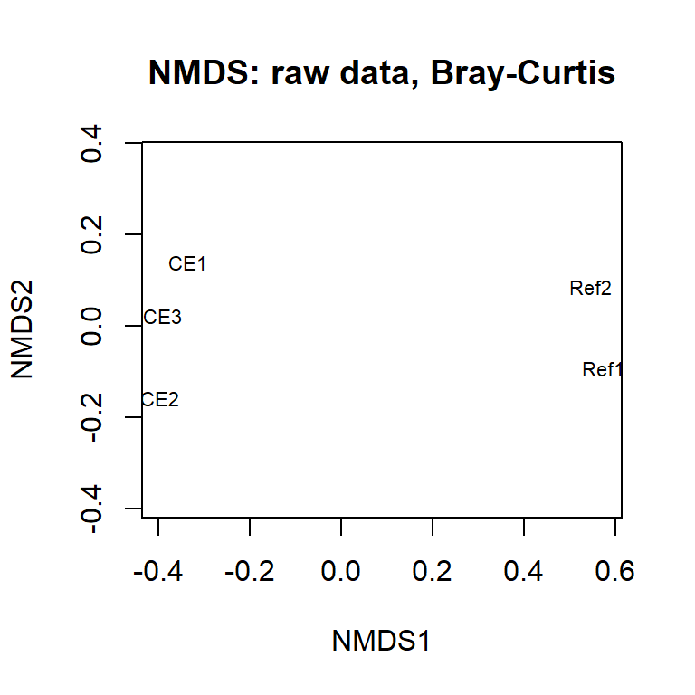
Note that metaMDS() involves some randomization, and your plot will change each time you run the code. For fully reproducible code, use set.seed().
Compare this with the 4th-root transformed data using the same distance metric.
ord_4rt <- metaMDS(worm_df_4rt, distance = "bray", k = 2,
autotransform = FALSE, trace = FALSE)Q. 6.2
Q. 6.3
Interpret the ordinations, cross referencing to the raw and transformed data. Are the patterns that you see in the data apparent on the ordination?
Yes, generally.
You can include on your plot the species ‘locations’ (as determined by their correlation with the axes). This shows where the main associations are occurring.
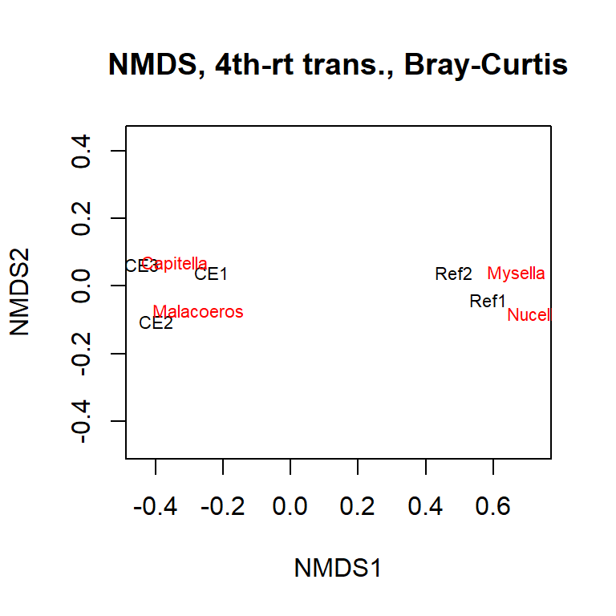
Q. 6.4
Re-plot the untransformed data, but this time include the species. How has the transformation changed your interpretation of the data?
Let’s have a look at another simulated dataset. Load the “CrustComm” sheet from “H2SMS_practicalData.xlsx”. Again, we’ll shift the Site column to row names.
comm_df <- read_xlsx("data/H2SMS_practicalData.xlsx", "CrustComm") |>
column_to_rownames("Site")
comm_df SpA SpB SpC SpD SpE SpF
Dunst 1 34 974 27 5 72
Creran 39 52 74 60 7 523
Lismore 94 83 76 91 8 3
Charl 86 3 48 116 2 23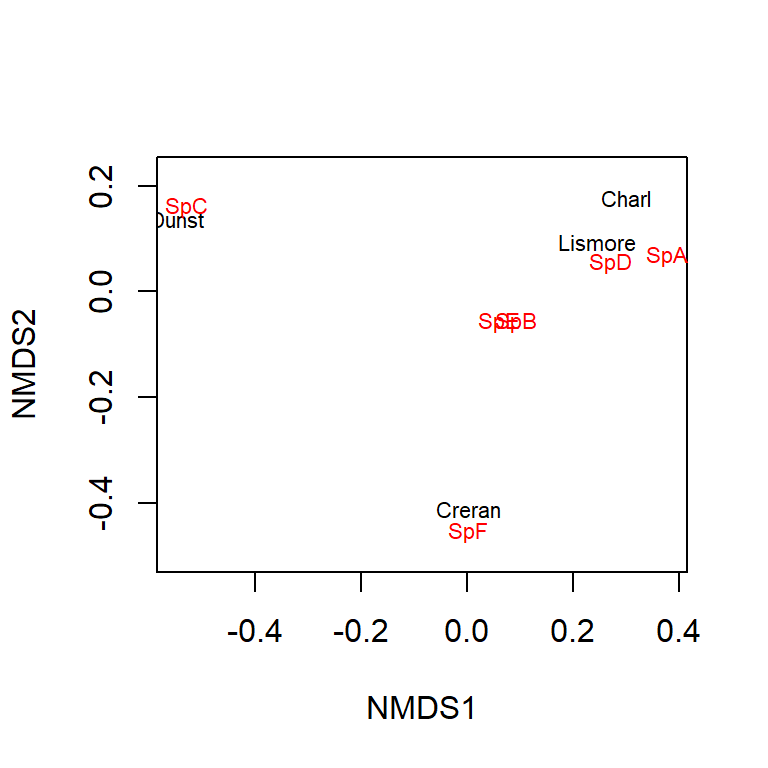
Q. 6.5
Have a look at these raw data. What are the main trends? Which sites are more similar?
Charl and Lismore are similar, driven by similarities in SpA, SpB, and SpD. Dunst is characterized by a high abundance of SpC, and Creran is characterized by a high abundance of SpF.
These data are still much simpler than most ‘real’ data sets but it is still difficult to summarise the similarities and differences between stations. However, multivariate analyses help you in this process.
Q. 6.6
Code (bonus)
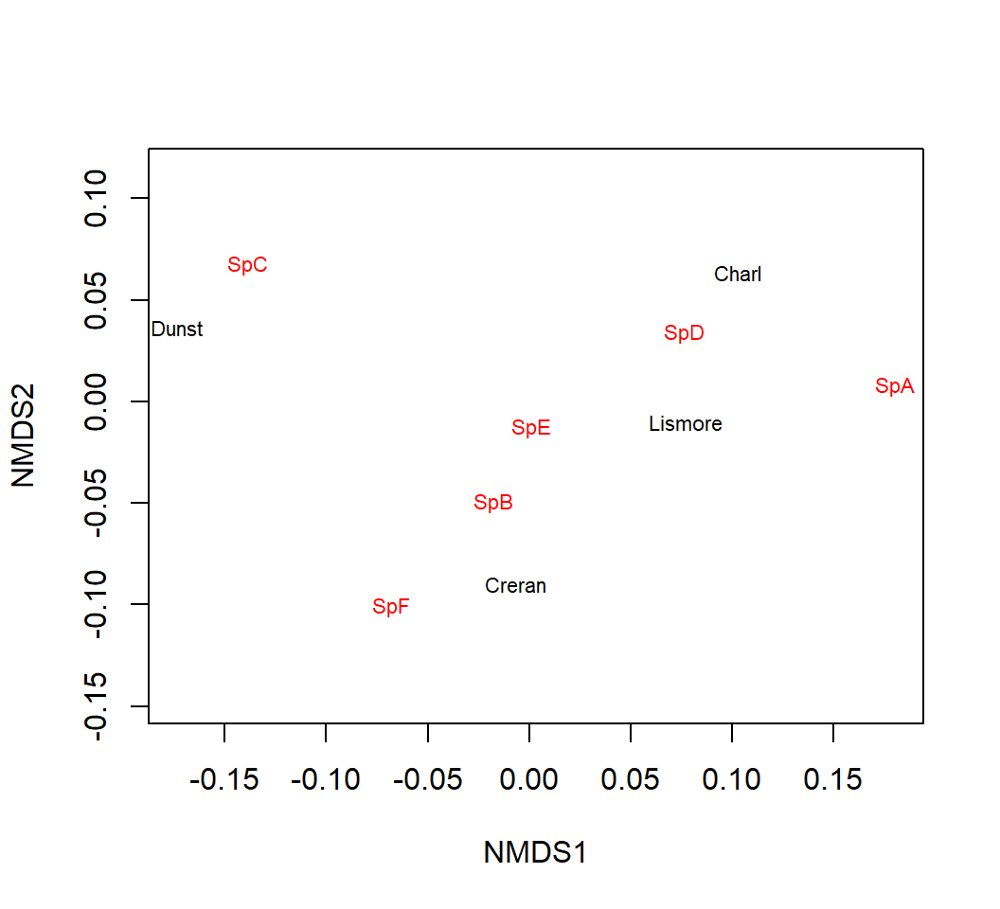
Q. 6.7
What has the transformation done to your interpretation of differences between the Sites and Site x Species associations?
It is much less clear I think. The similarity between Charl and Lismore is no longer clear, and SpB seems more indicative of Creran. Generally everything looks more distinct.
6.2 Diversity indices
Prior to the development of the multivariate techniques you’ll be using today, univariate indices were derived from multivariate data. A classic example of such a univariate measure in ecology is the Shannon-Wiener diversity index (a.k.a., Shannon’s H). This index balances the number of species in a sample and the relative abundance of each species (where ‘species’ can once again be any sort of feature). Univariate measures of ‘evenness’ can also be derived from multivariate data and, when reporting species data, you may also wish to include species richness, which is just the number of species present regardless of their abundances.
We can use the comm_df dataset we invented to explore some diversity concepts.
Q. 6.8
Looking at the comm_df data (by eye) and given the description above, which of the sites is associated with the lowest and highest diversity?
They all have the same number of species, so differences in diversity will be driven by the relative abundance. Lismore and Charl have higher evenness so they will have higher diversity, while Creran and (especially) Dunst are more dominated by single species indicating lower diversity.
shannon_H <- diversity(comm_df, "shannon", base = exp(1))
richness <- specnumber(comm_df)
barplot(shannon_H, main = NULL, ylab = "Shannon's H")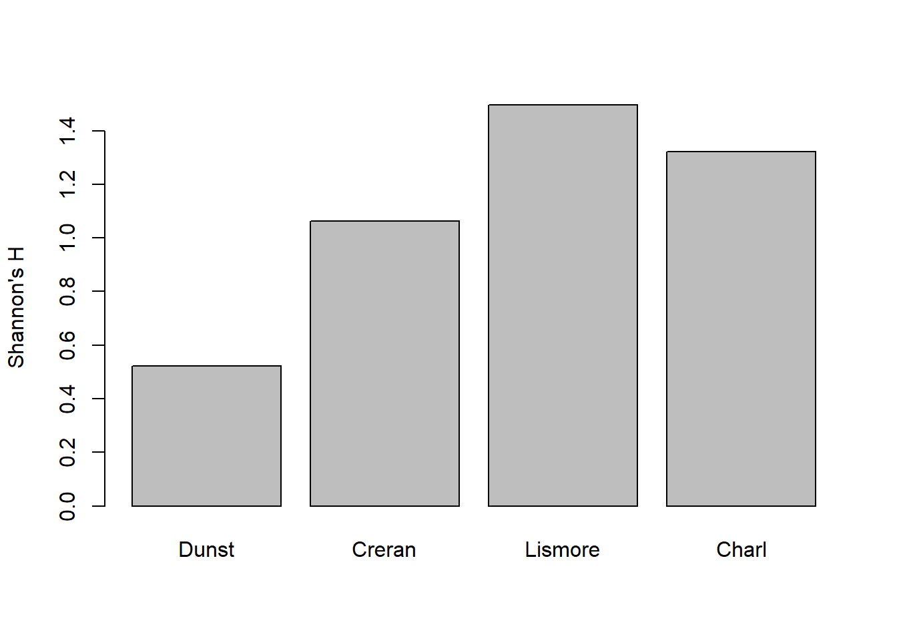
Try plotting richness.
Q. 6.9
Do the plots correspond to what you expected?
Yes, but many of the H2 Statistics for Marine Science students do not have a background in ecology and are not familiar with community ecology metrics.
Q. 6.10
What does specnumber() do?
Use ?specnumber. It counts the number of species (a.k.a., the species richness).
Q. 6.11
How could you ‘counter’ any extremes (as in superabundant taxa) in the raw count data that you’ve generated? Try your idea.
Use a 4th root or log transformation.
Q. 6.12
Which description (diversity or richness) is ‘best’ for describing your multivariate data? How does this compare to NMDS?
I’d say it depends on the research question. Richness fails to distinguish among the sites, but it might be relevant that the sites all have the same number of species. Diversity distinguishes them, but because it blends richness and relative abundance, it does not answer why sites are different. NMDS distinguishes among sites, but is more qualitative in interpretation.
6.3 Lichen pastures
Have a look at the varespec and varechem datasets included in the vegan package. I’ve reproduced the examples below:
par(mfrow=c(1,3), mar=c(4,4,1,1))
ordiplot(ord_vare, choices = c(1, 2), display = "sites", type = "text")
ordiplot(ord_vare, choices = c(1, 2), display = "species", type = "text")
ordiplot(ord_vare, choices = c(1, 2), display = c("sites", "species"),
type = "text")
# You can superimpose environmental variables onto NMDS-ordinations.
ef <- envfit(ord_vare, varechem) #
plot(ef, p.max = 0.1, col = "green") # overlay environmental variables
plot(ef, p.max = 0.01, col = "blue") # subset based on p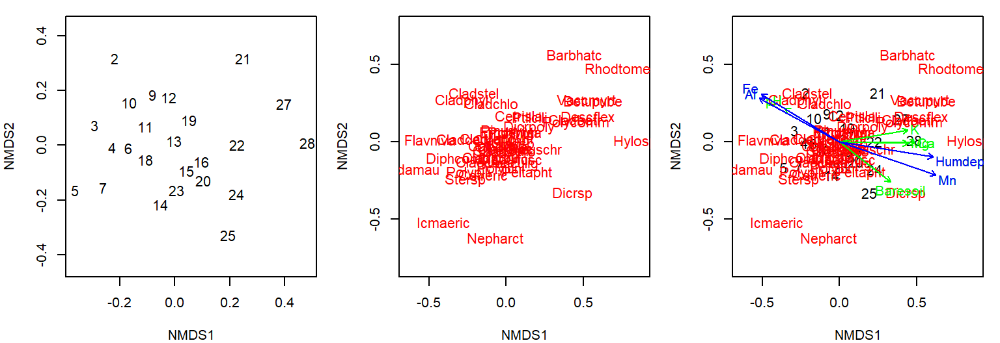
See how the multivariate analysis has taken all those data, both species and environmental, and ‘communicated’ them in one single figure? You can see numerous relationships (both positive and negative) in this figure, and species-site-environment associations. It also illustrates a potential challenge with multivariate ordinations. It quickly gets cluttered and overloaded. There is no easy way around this, though there is further help in these packages.
6.4 Sherkin Island phytoplankton
Let’s have a look at another real dataset contained in the sheet “Sherkin” within “H2SMS_practicalData.xlsx”. These are observations of phytoplankton from the Sherkin Island Marine Station in Ireland in the top 5m, summed by month and station across 2000-2014.
Here, we can try autotransform=T in the metaMDS() function. This will make reasonable choices for transformations based on the scale of your data. See the help documentation for detail.
In this case, we’ll also use ggplot to make the comparison of months and regions (sites within the bay or on the shelf) easier. Rather than using rownames, we can simply remove the site-related columns for the metaMDS() function so we pass in a dataframe with only the phytoplankton abundance columns.
Call:
metaMDS(comm = select(sherkin_df, -month, -region, -locality), autotransform = T, trace = FALSE)
global Multidimensional Scaling using monoMDS
Data: wisconsin(sqrt(select(sherkin_df, -month, -region, -locality)))
Distance: bray
Dimensions: 2
Stress: 0.1814321
Stress type 1, weak ties
Best solution was repeated 8 times in 20 tries
The best solution was from try 1 (random start)
Scaling: centring, PC rotation, halfchange scaling
Species: expanded scores based on 'wisconsin(sqrt(select(sherkin_df, -month, -region, -locality)))' To plot what we’d like to, we need to combine the output from the ordination with the site-related columns. We can access the MDS coordinates with .$points, and bind those to the site information.
sherkin_df |>
select(month, locality, region) |>
bind_cols(ord_sherkin$points) |>
ggplot(aes(MDS1, MDS2, shape=region, fill=month)) +
geom_point(size=3) +
scale_shape_manual("Region", values=c(21, 22)) +
scale_fill_brewer("Month", palette="RdYlBu") +
guides(fill=guide_legend(override.aes=list(shape=21)))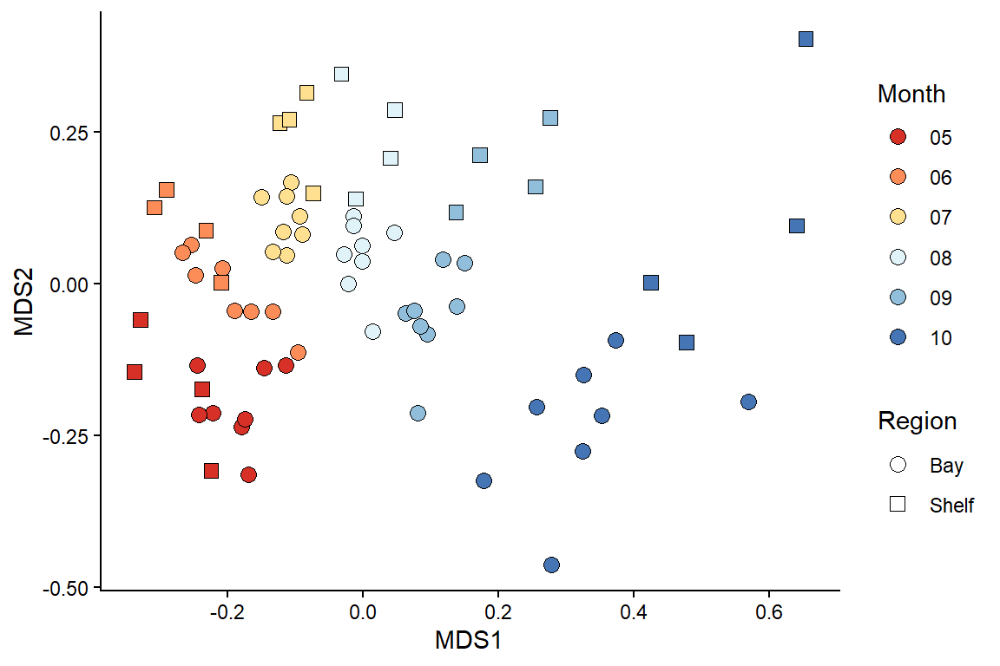
Q. 6.13
What patterns can you observe in the community data? Remember to consider the stress.
The stress is ~0.18, so broad patterns are ok to interpret.
With that in mind, there is a clear gradient across months (colours), and likely a tendency for clustering of Bay and Shelf sites (shapes), becoming stronger through the summer, though the latter interpretation is more tenuous.
You are in charge of the analysis. You can change the emphasis and elements of the message depending on your data transformation, dissimilarity metric, and ordination technique. There is no absolutely ‘correct’ way to go about multivariate stats, so different statisticians will have their favoured approaches and methods.
Note: Some functions (e.g. metaMDS()) default to autotransform your data if the function thinks it is necessary. This can be useful but, in scientific reports, you must specify what transformations you used. This can be recovered from the output, but it is often worth taking a more manual approach.
6.5 Principal components analysis (PCA)
PCA is a long-established multivariate technique that is often applied to ‘environmental’ data rather than ‘count’ data. Environmental data is, usually, quite different from species count data in that most environmental parameters (e.g. metal concentrations) are present, at least to some degree. This contrasts to species data where many species are often absent (zeros). These zero counts would lead to problems if analysed using PCA, since PCA would consider sites with many shared absences to be more similar, which is often not desirable.
In PCA, it is important that all variables are of a roughly similar magnitude. Environmental data might include all manner of different variables on different scales (e.g., radiant flux in lumens, temperature in C, nutrient/contaminant concentrations in mg/l, coordinates in easting/northing). If used in their raw form, the variables with larger values would have a greater influence on the outcome of the PCA.
Instead, we want all of our variables to be treated ‘equally’. You can do all this by setting pcomp(..., scale=TRUE). Scaling means that each measurement is expressed in units of standard deviation (a Z-score!!). Usually it is desirable to center the data as well by subtracting the mean. Centering and scaling means that each of the environmental variables is of ‘equal importance’ regardless of the magnitude of the raw values.
A basic, and very friendly, introduction to PCA is given in Chapter 4 of Clarke et al. (2014).
The data set we’ll use is from SAMS Professor Tom Wilding’s PhD thesis. He set up an experiment to examine the relative leaching of trace metals from concrete, granite, and a control (artificial seawater). Concrete contains cement which is enriched in vanadium and molybdenum, and these elements could leach out in dangerous amounts. Granite, the main constituent of this concrete, might also leach some trace elements. He suspended concrete and granite powder in artificial water, constantly agitated it, and measured the leachate concentrations over 100 days Wilding and Sayer 2002.
Read in the “Leaching” sheet from “H2SMS_practicalData.xlsx”. We’ll also do a bit of munging for plotting.
leach_df <- read_excel("data/H2SMS_practicalData.xlsx", sheet = "Leaching") |>
mutate(Treat_abbr = factor(Treat, # abbreviate for cleaner plotting
levels = c("concrete", "control", "granite"),
labels = c("conc", "ctrl", "gran")),
Treat_day = paste(Treat_abbr, Day, sep="_"), # treat + days in exprmnt
Concentration = signif(Concentration)) |>
select(Treat, Treat_day, Element, Concentration) # remove columns that aren't of use,
# not dominated by zeros; try other values (e.g. <10)
table(leach_df$Concentration == 0)
FALSE TRUE
143 4 mean(leach_df$Concentration == 0) # recall that R treats T/F as 1/0 [1] 0.02721088Q. 6.14
Do some exploratory analysis of this dataset. How are the concentrations distributed? Do similar treatments show qualitatively similar distributions? Elements?
ggplot(leach_df, aes(Concentration)) + geom_histogram()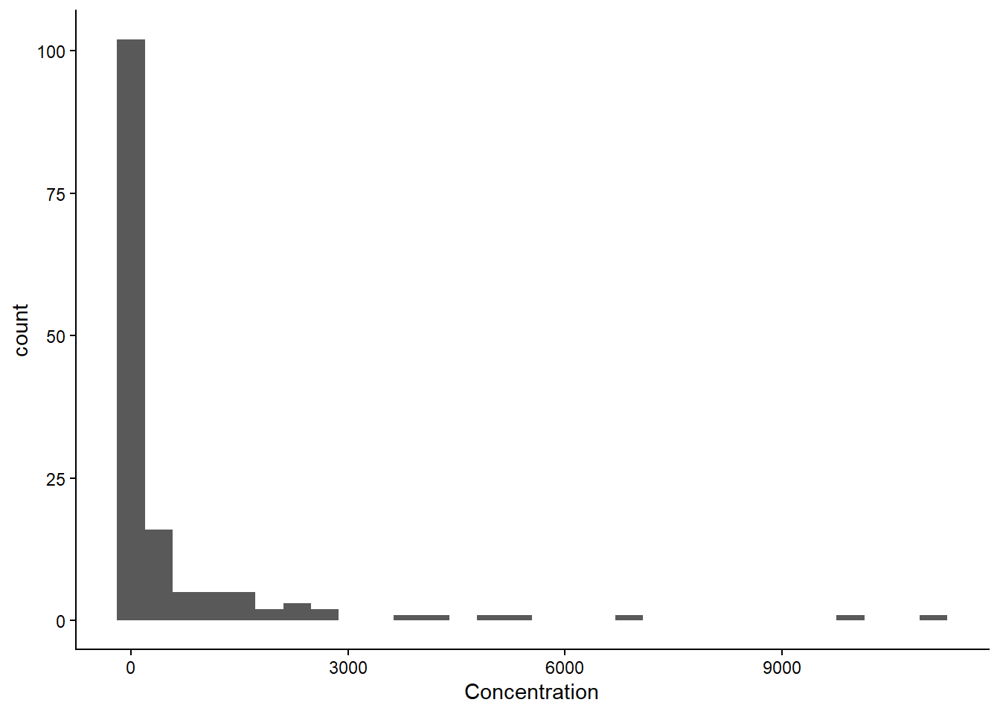
ggplot(leach_df, aes(Concentration)) + geom_histogram() + facet_wrap(~Element, scales="free")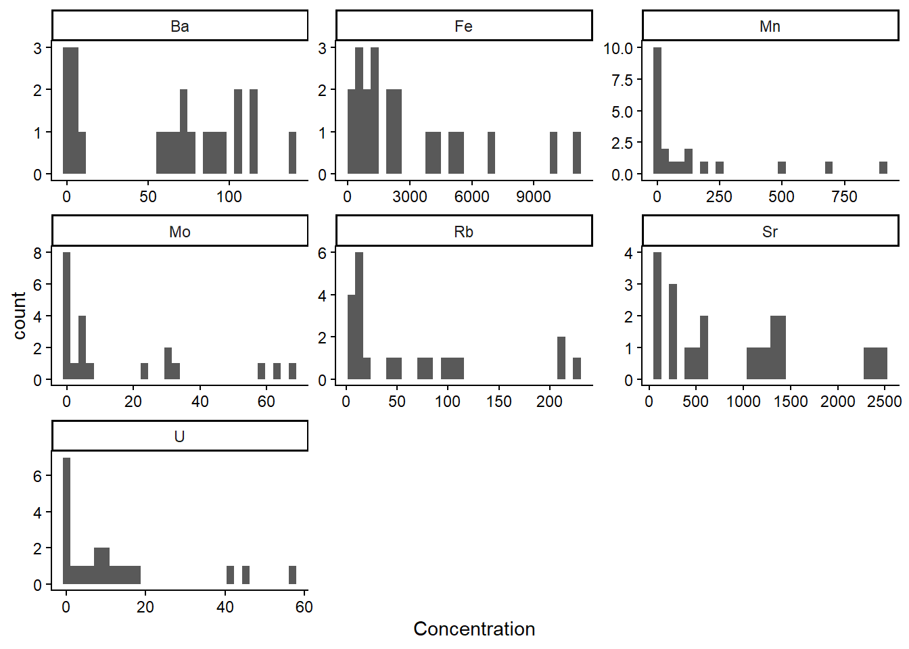
ggplot(leach_df, aes(Concentration)) + geom_histogram() + facet_wrap(~Treat, scales="free")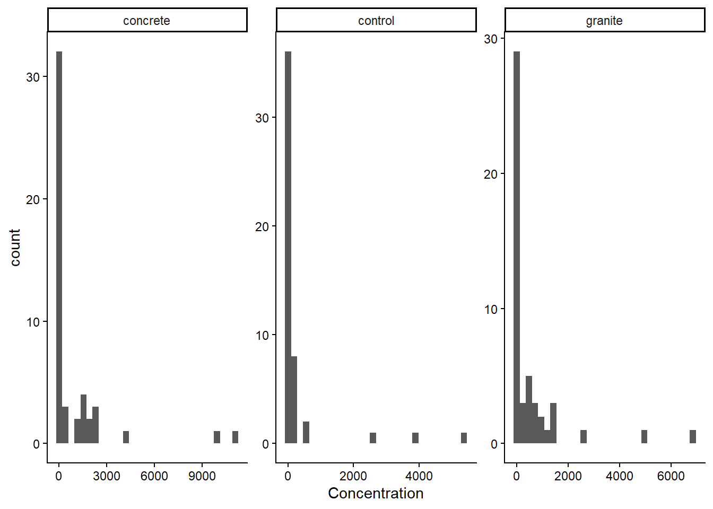
Heavily skewed overall, within each element, and within each treatment. The values are drastically different among elements (Fe and Sr in the thousands, others in the tens or hundreds), but broadly similar within treatments.
Next, we need to re-organise the data into a wider format so that each element is a column and each row is a sample.
leach_df_wide <- leach_df |>
pivot_wider(names_from="Element", values_from="Concentration")The column Treat_day is coded as trt_day, where trt is the 4 letter code indicating treatment type and day is the number of days elapsed in the experiment (one of 1, 4, 7, 17, 32, 50 or 100). So gran_32 means the granite treatment sampled at day 32.
We can calculate the principal components using prcomp(), subsetting the dataframe to give only the columns with element concentrations (i.e., removing Treat and Treat_day, which are the first two columns). We’ll also set the arguments for centering and scaling to TRUE.
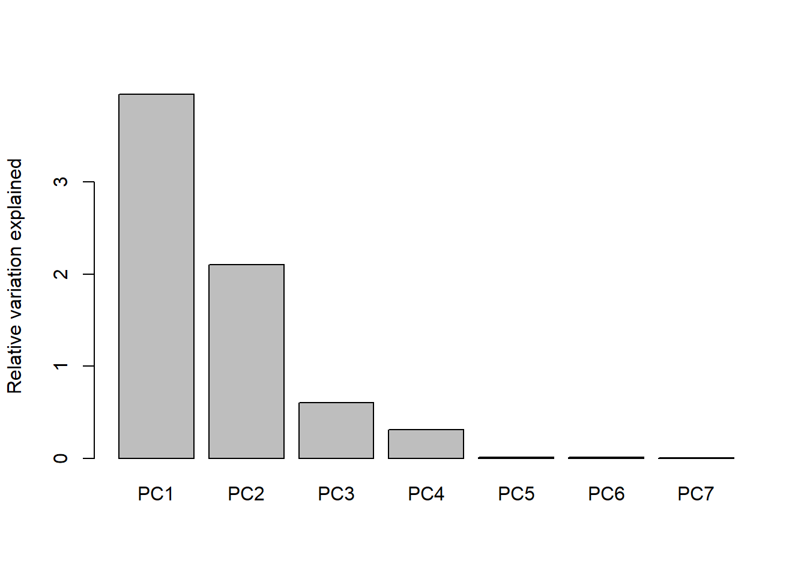
You can see from the scree plot that the amount of variance explained declines with principal component as expected, and that there is very little variation left after 3 principal components. That is, nearly all of the variation in the dataset is captured by PC1, PC2, and PC3. In this case, PCA has essentially solved the ‘curse of dimensionality’ by successfully reducing 7D data to about 3D.
Data transformations are critical to PCA analysis, as they are with NMDS. In most PCAs the data are standardized so that each column is on the same scale.
We can plot our results using biplot() which has some helpful defaults including labels for the samples (Treat_day) and the correlation strength of each element with PC1 and PC2:
biplot(PCA_leach, xlabs = leach_df_wide$Treat_day, cex = 0.75)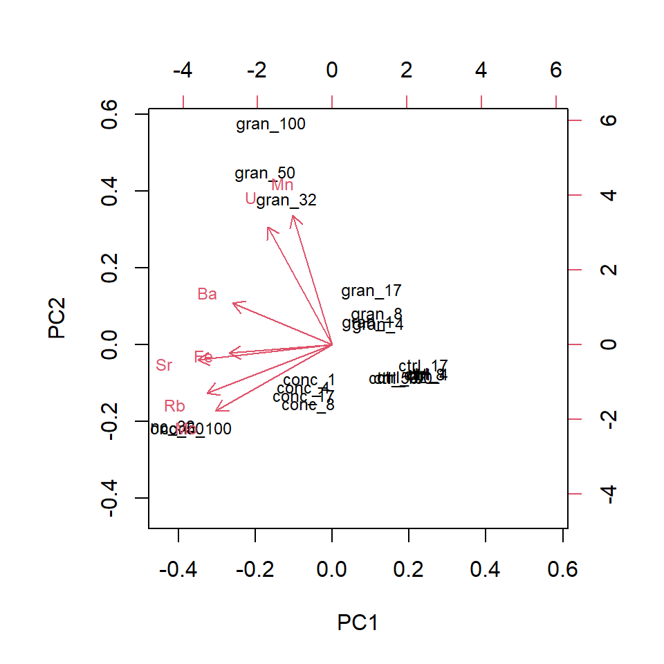
To plot more than 2 dimensions you could use a static 3D plot, but these are often difficult to interpret since it is reduced back to 2D on a page. Another option is to use colour for the 3rd axis, or, for digital distribution, a package like plotly can produce an interactive 3D plot.
Code (bonus)
# Remove the if statement!
if(knitr::pandoc_to() == "html") {
arrow_df <- tibble(element=row.names(PCA_leach$rotation),
PC1=PCA_leach$rotation[,1]*6,
PC2=PCA_leach$rotation[,2]*6,
PC3=PCA_leach$rotation[,3]*6)
PCA_leach$x |>
as_tibble() |>
mutate(Treat_day = leach_df_wide$Treat_day) |>
separate_wider_delim(Treat_day, delim="_", names=c("Treatment", "Days")) |>
mutate(Days=as.numeric(Days)) |>
plot_ly(type="scatter3d", x=~PC1, y=~PC2, z=~PC3, symbol=~Treatment, color=~Days, mode="markers",
symbols=c("circle-open", "diamond-open", "cross")) |>
add_text(data=arrow_df, x=~PC1, y=~PC2, z=~PC3, text=~element, color=I("black"), symbol=NULL)
}The ordination plots the relative positions (in terms of similarity) of the samples. If there are numerous label overlaps, this makes the interpretation of the ordination difficult. If you were producing this for publication you would need to sort this out to present the reader with a figure that communicates the message effectively.
Q. 6.15
Which elements are positively associated with granite and concrete, particularly after longer periods of leaching?
Mn and U are associated with granite. Mo, Rb, and Sr are associated with concrete.
As is typical, overlapping points make interpretation more difficult. There are elegant solutions to this (in terms of labelling) but for now, we’ll split the data and analyse it separately.
We’ll need more data wrangling to split it efficiently and we’ll use grepl(), which identifies a pattern within a character using a regular expression (a.k.a., regex), returning a TRUE or FALSE for each element in the character vector. Here, we’ll filter the dataframe to only include rows where Treat_day contains conc or gran. Remember the ‘or’ operator |?
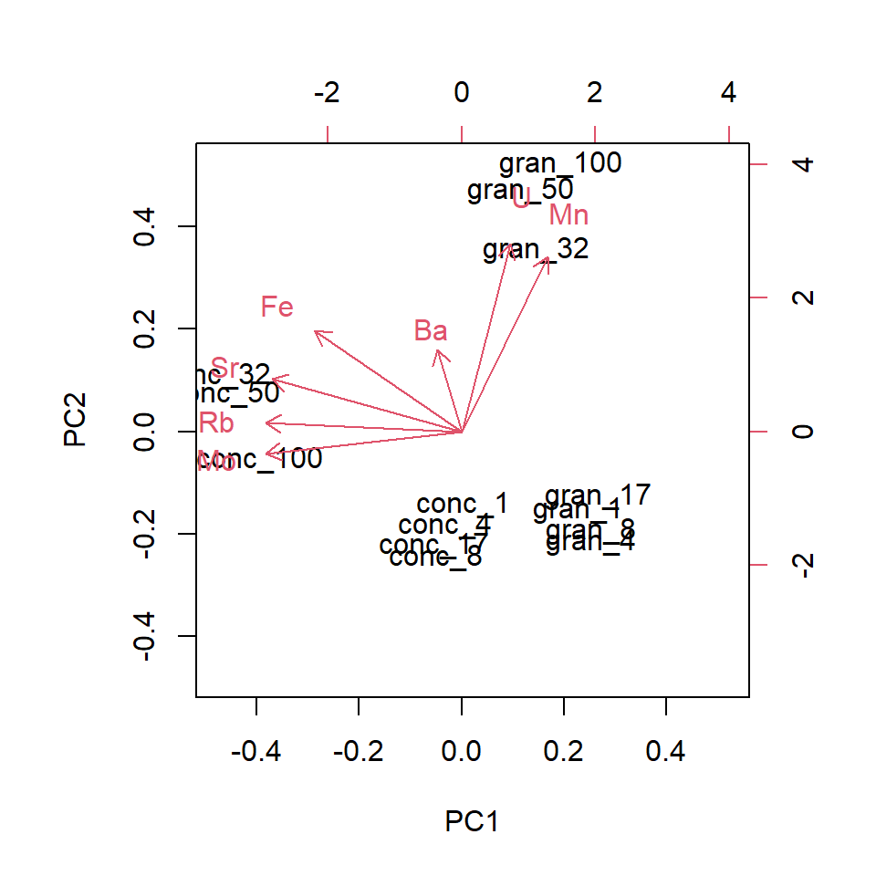
Q. 6.16
Repeat the analysis, but set scale = FALSE. Which element now seems to dominate the analysis? Explain what you see.
A PCA is normally reported with the proportion of the variation explained by each of the principal components (and/or the cumulative proportion). If the cumulative proportion for the 1st two components is high, then the 2D (PC1 and PC2) ordination is a good representation of the similarities between samples. In that sense a high cumulative proportion is analogous to a low stress for NMDS.
Let’s have a look at a summary of the principal components.
PCA_leach_summary <- summary(PCA_leach)
#PCA_leach_summary
#str(PCA_leach_summary)
PCA_leach_summary$importance[, 1:4] # extract only PC1-4 PC1 PC2 PC3 PC4
Standard deviation 1.988091 1.450775 0.7782675 0.5599535
Proportion of Variance 0.564640 0.300680 0.0865300 0.0447900
Cumulative Proportion 0.564640 0.865320 0.9518500 0.9966400As you can see, PC1, PC2, and PC3 capture more than 95% of the variance in our data. Adding PC4 brings that up above 99%.
Finally, we can look at factor loadings. This is a measure of how each feature (metal concentration in this case) relates to the principal components. In PCA, the principal components are sequentially ‘less’ influential since they describe increasingly smaller amounts of variation. By centering and standardising the variables, you can assess the relative importance of each in driving the patterns in the ordination. The magnitude is what we’re interested in rather than the sign.
In an object created by prcomp(), the loadings are stored as .$rotation.
# ?prcomp
# str(PCA_leach)
signif(PCA_leach$rotation[, 1:5], 3) # factor loadings for PC1-5 PC1 PC2 PC3 PC4 PC5
Ba -0.367 0.2090 0.6510 -0.619 -0.00405
Fe -0.380 -0.0440 -0.7370 -0.553 0.01420
Mn -0.146 0.6500 -0.0963 0.211 0.67300
Mo -0.430 -0.3360 0.0795 0.283 -0.09810
Rb -0.462 -0.2440 0.0327 0.305 0.21600
Sr -0.495 -0.0788 0.0663 0.168 0.01510
U -0.238 0.5940 -0.1110 0.254 -0.70000Here you can see that Sr, Rb, Mo are relatively ‘important’ in driving the multivariate pattern you’ve observed (i.e., high absolute values on PC1) while Mn and U have high values for PC2 (you could say that PC2 accounts for Mn and U).
6.6 Conclusions
Multivariate analyses are extremely useful in a variety of contexts. The form of analysis is often more qualitative and less inferential compared to univariate analyses we’ve covered, but this is an active field of research and there are well-developed methods and R packages for more complex analyses (e.g., ade4).